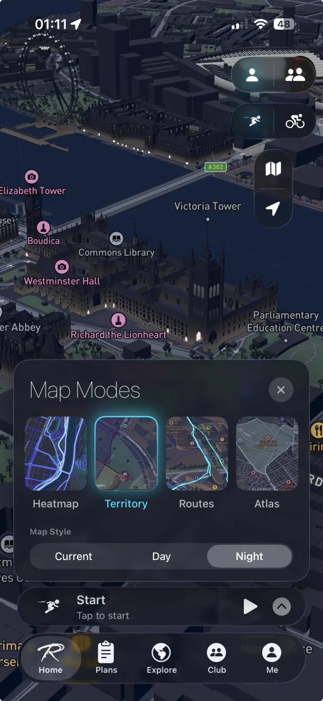
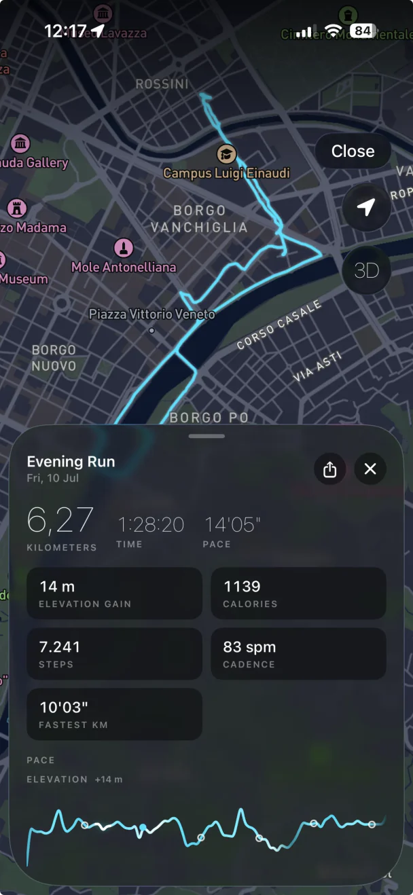
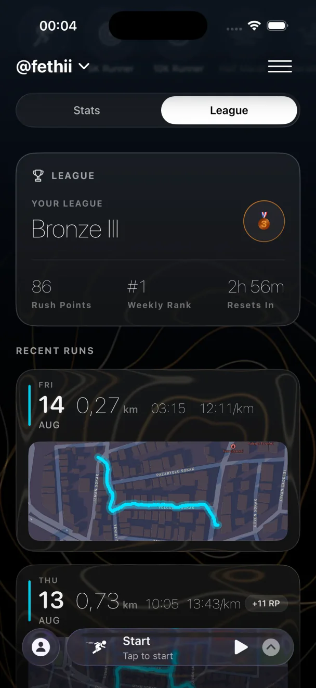
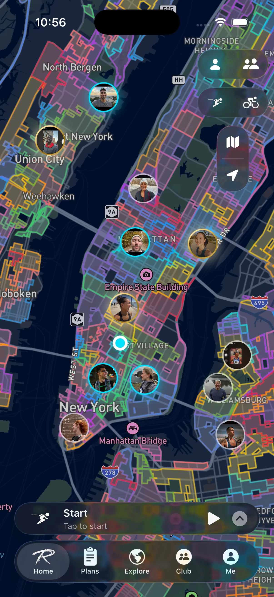
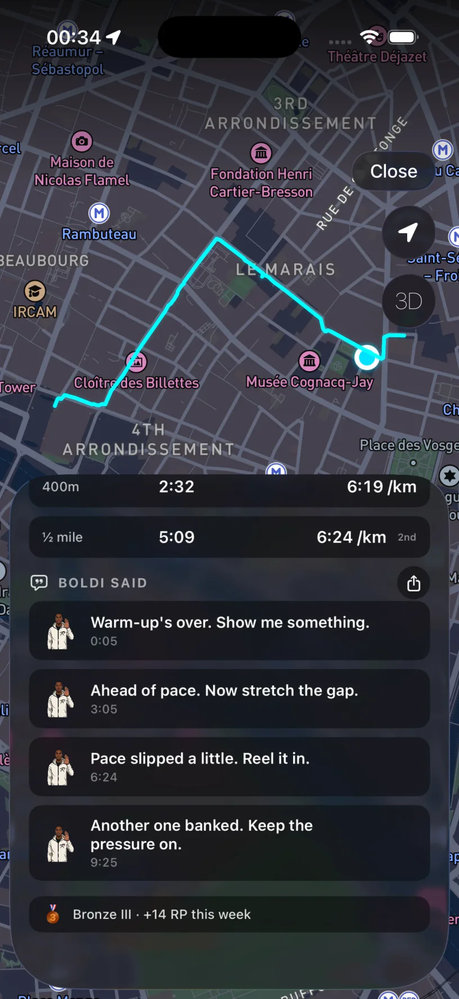
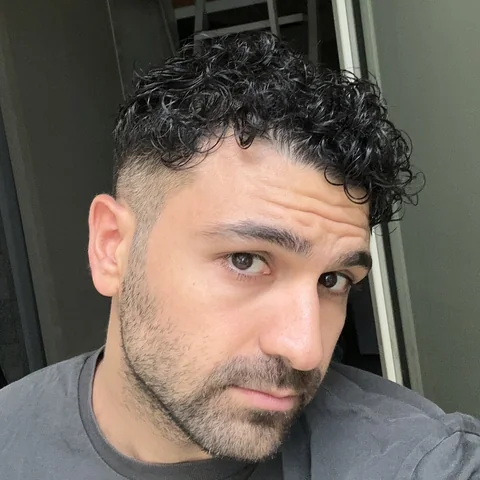

Press kit
RouteRush turns running and cycling into territorial conquest. Close a loop on a run and the ground inside it becomes yours, drawn on a 3D night map of your city. Territory earns Rush Points, Rush Points decide weekly leagues, and everything you hold can be contested by anyone who runs your streets. An AI coach, Boldi, speaks during the run — about your pace and the ground ahead — and stays quiet the rest of the time. RouteRush is free to start on iOS 17+, in six languages, built by independent developer Fethi Omur in Turin, Italy.

Map modes
Run summary
Leagues
Territory
Boldi coach
Fethi Omur is an independent iOS developer based in Turin, Italy. RouteRush is a solo project — design, code, the map engine and the Boldi coach are one person's work.
RouteRush is an iOS app that turns running and cycling into territorial conquest — close a loop on a run and the streets inside it become your territory.
Everything on this page may be reproduced for articles, reviews and videos about RouteRush. Please don't stretch, recolour or add effects to the logo, and don't imply endorsement. For anything else — interviews, early builds, higher-resolution assets — write to the press contact above.
{kind=link}
{kind=link}
{kind=link}
{kind=link}
{kind=link}
{kind=link}
{kind=link}